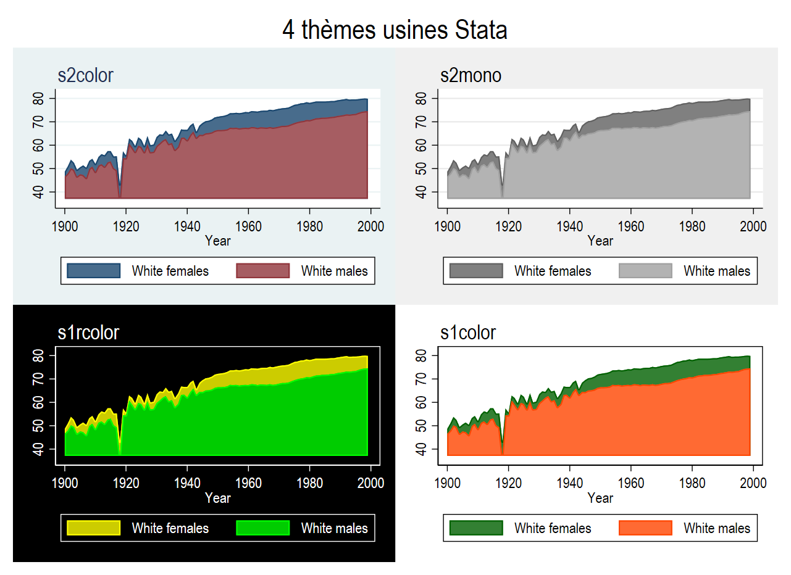
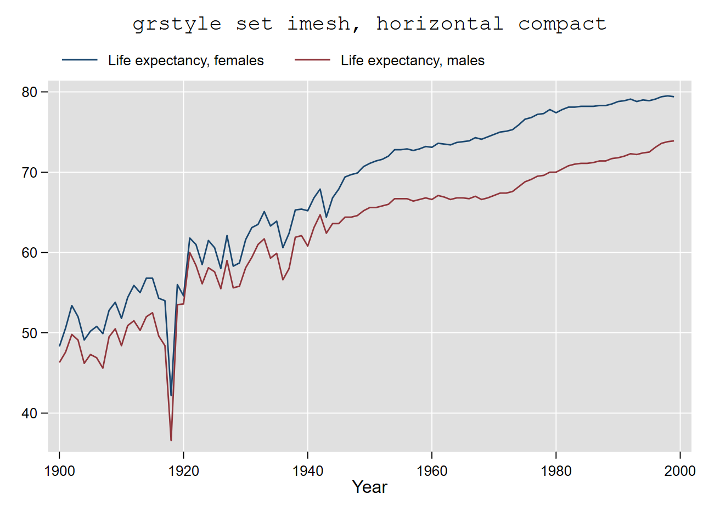

net install schemepack, from("https://raw.githubusercontent.com/asjadnaqvi/Stata-schemes/main/schemes/") replace
help schemepack Styles-thèmes
Le thème est la « mise page » par défaut du graphique.
- Tous les graphiques ont un thème, appelé scheme qui paramètre tous les éléments composant le graphique : couleurs, épaisseurs, positions, contours, marges….
- Les options entrées dans le graphique visent à modifier ce paramétrage.
- Stata dispose de 11 thèmes internes, celui utilisé par défaut est s2color (factory scheme)
- Sans modifier des options, un thème peut ne pas être adapté à un graphique.
Changement de thème:
- Par les boîtes de dialogue: « Edit » => « Préférences » => « Graph preferences ».
- Par une ligne de commande:
- On peut changer de thème en option d’un graphique : scheme(nom_scheme)
- Dans un fichier .do ou .ado on peut charger un thème de façon temporaire (session) ou permanente: set scheme nom_scheme [,permanently]
- Le choix du thème peut-être également intégré au fichier profile.do (charge le thème au début de chaque session
Styles internes-externes
Styles internes
Stata fournit 11 thèmes internes dont la liste peut être obtenue avec help scheme.
Exemple de mise en page interne avec 4 de ces 11 thèmes

Styles externes
Plusieurs thèmes et collection de thèmes externe peuvent être installées, comme les collections de F.Briatte (Burd) et de D.Bischoff (plottig, plotplainblind…). Récemment A.Naqvi a programmé une série de thèmes intéressante, nommée schemepack, qui proposent pour plusieurs palettes de couleurs 3 variations : white_nompalette, black_nompalette et gg_nompalette.
Installation (version la plus récente)
Attention seulement une palette est de type qualitative (tableau), les autres séquentielles. L’utilisation des thèmes associés aux palettes séquentielles peuvent donner un rendu peu satisfaisant lorsque le nombre d’objets graphique réduit (par exemple 2 courbes). Il conviendra alors d’utiliser en amont colorpalette. Egalement, la position par défaut de la légende a été fixée à 3 heures ce qui n’est peut-être pas le plus judicieux.
Exemple avec les thèmes white_tableau et white_viridis 
Les deux couleurs se distinguent difficilement avec la palette viridis. On peut corriger rapidement ce problème avec colorpalette.
use uslifeexp, clear
colorpalette viridis, n(2) nograph
tw line le_wfemale le_wmale year, ///
fc(`r(p)') lc(`r(p)') recast(area) scheme(white_viridis)
grstyle de B.Jann
Parallèllement à colorpalette, B.Jann a mis à disposition un générateur de thème dont l’utilisation, à minima, me semble particulièrement efficace. Ici nous présenteront que les quelques options que j’utilise quasi exclusivement.
Installation
ssc install grstyleInitialisation et chargement
- Dans un programme on initialise le générateur avec
grstyle init - On peut enregistrer un thème avec un nom:
grstyle init nom_thème, [path] [replace] - Si le thème a été enregistré, on peut le charger dans un graphique avec
scheme(nom_scheme)ou avec la commandeset scheme. Lors de sa création, le thème est chargé pendant la session. - Les modifications de l’habillage et de la mise en page du graphique se fait avec une série de commandes préfixées par
grstyle set [legend/color….].
Background du graphique, grid, légende
grstyle propose 3 options pour le background et le quadrillage : plain, mesh et imesh. Par exemples avec quelques sous options supplémentaires:
grstyle set plain, horizontal compactgrstyle set mesh, horizontal compactgrstyle set imesh, horizontal compact
Légende ( position et retirer le contour)
On peut retirer facilement le contour de la légende (on allège ainsi les options du graphique) avec nobox. En positionnant la légende à 11 heures
grstyle set legend 11 , nobox



Couleurs
Même syntaxe que colorpalette, ici on associe le choix de la palette de couleurs à grstyle set color Avec la palette viridis réduite à deux couleurs, par exemple avec select(1 11)
grstyle set color viridis, select(1 11)
Exemple avec le fond de type mesh, la légende à 11 heures sans contour et une sélection de deux couleurs de la palette viridis

webuse set https://github.com/mthevenin/stata_graphiques/tree/main/bases
use pingouin, replace
webuse set
grstyle init
grstyle set mesh, horizontal compact
grstyle set legend 11, nobox
grstyle set color plasma, select(6 9 12 6 9 12)
local osl lw(*1.2)
local osca msize(*.8) msymbol(+)
#delimit ;
tw sca bill_length_mm flipper_length_mm if espèce==1, jitter(3) `osca'
|| sca bill_length_mm flipper_length_mm if espèce==2, jitter(3) `osca'
|| sca bill_length_mm flipper_length_mm if espèce==3, jitter(3) `osca'
|| lowess bill_length_mm flipper_length_mm if espèce==1, `osl'
|| lowess bill_length_mm flipper_length_mm if espèce==2, `osl'
|| lowess bill_length_mm flipper_length_mm if espèce==3, `osl'
|| , legend(order(1 "Pingouin Adélie" 2 "Manchot à jugulaire" 3 "Manchot papou") row(1))
ytitle("Longueur bec (mm)") xtitle("Longueur nageoire (mm)")
title("Longueurs du bec et des nageoires")
;
#delimit crPlus qu’un générateur de thème, une utilisation minimale grstyle permet de paramétrer des options en amont du graphique et donc d’alleger sensiblement son programme et faciliter ses modifications.